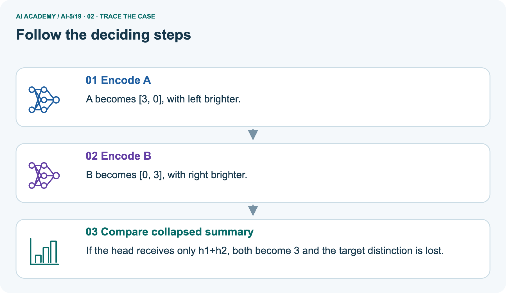
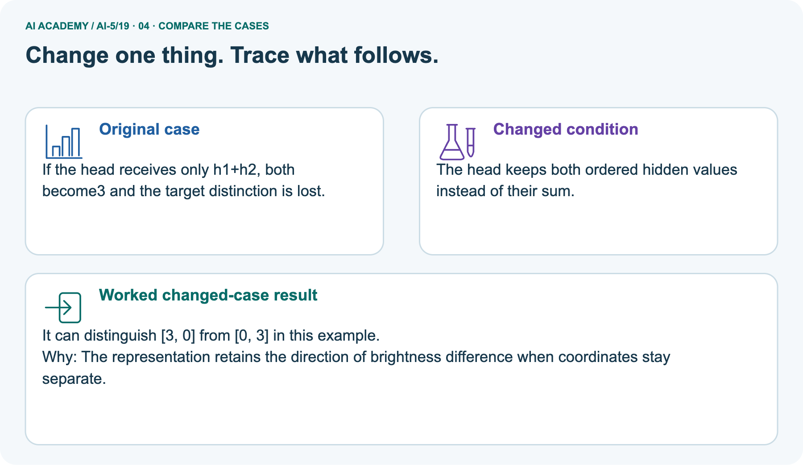
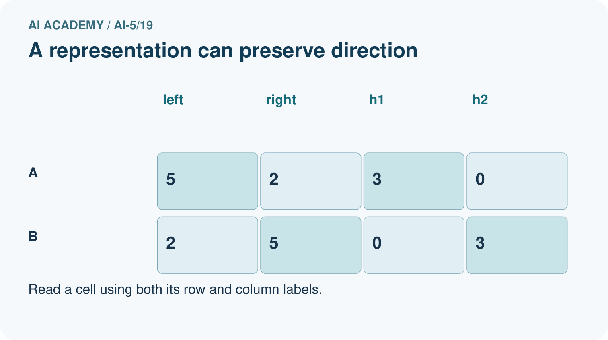
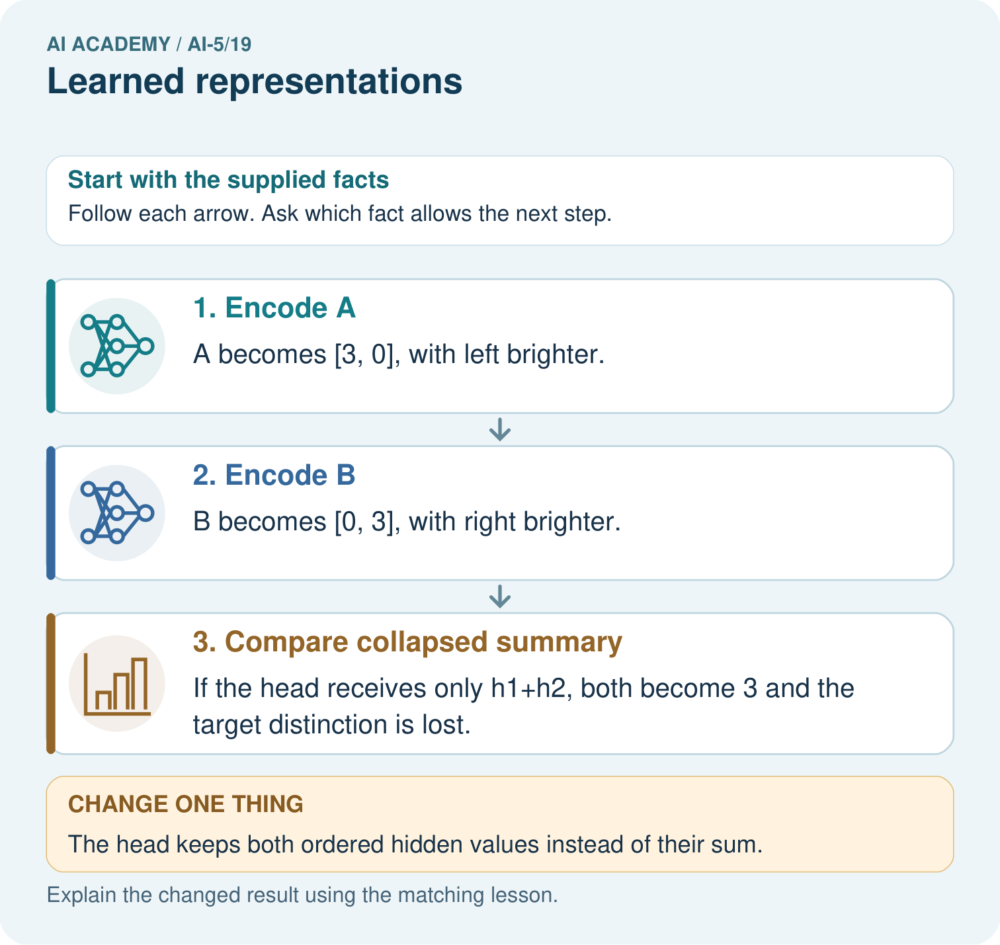
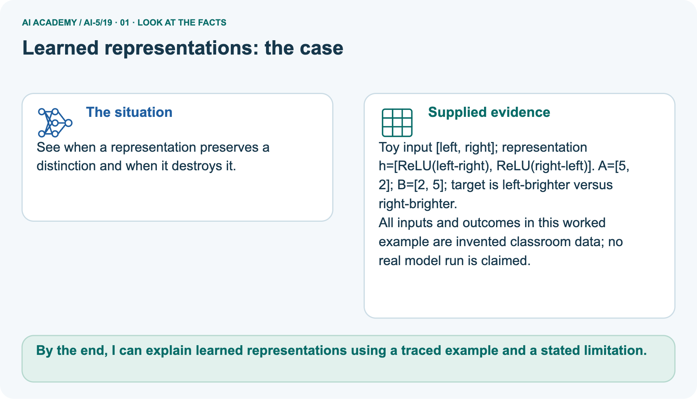
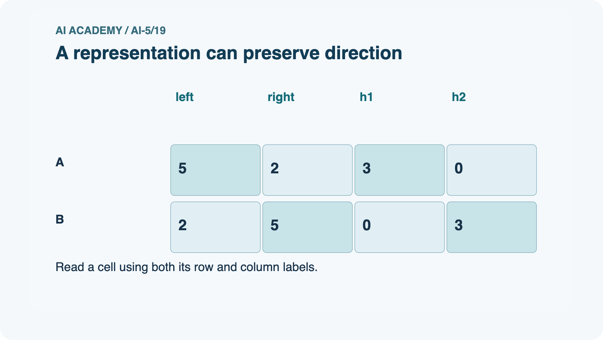
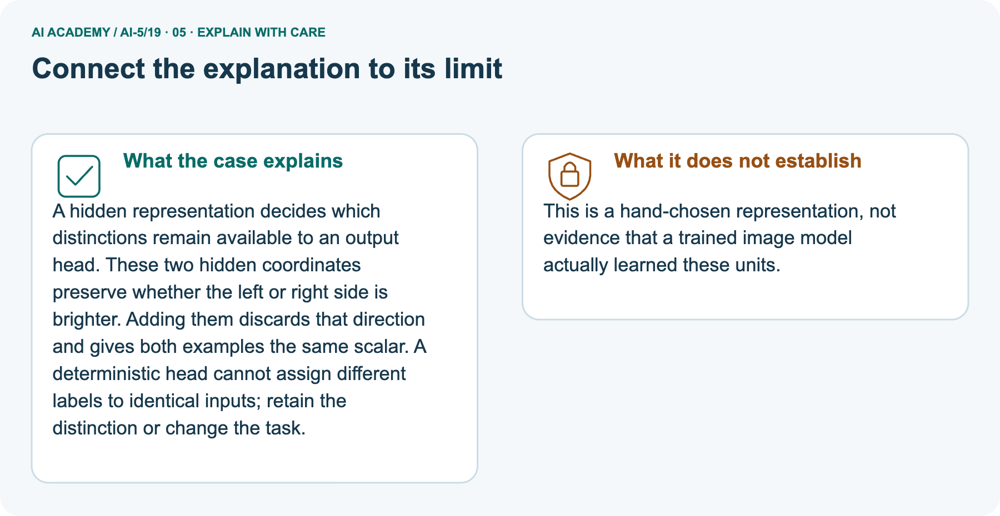

AI Academy · Level 5 · Grade 10 · Week 19 · Student lesson
Learned representations
Learn to understand, design, build, test and explain AI systems responsibly.
Project: Image-pattern Network Investigation
THE CONNECTED WEEK
Name the target. Trace the encoding. Find the lost distinction.
Audit task-dependent representation collisions and a complete algebraic information repair.
Keep one habit: Complete rectangle trace → scale-matched collision graphic → pictured brightness summary → runnable h-plus-sum repair → independent thresholded encoder.
Main lesson · Section 1
What distinctions reach the prediction head?
A useful representation depends on the target,and constructed features are not automatically learned.
Learning goals
I can trace an input through a hidden representation and a decision rule.
I can identify distinctions that a representation preserves or loses.
I can separate a useful constructed feature from evidence of successful learning.
Retrieve the information path and checks
Close your notes first. A rough first answer helps us choose the right starting point; it is not a score for your ability.
Without opening the old lesson, explain one key idea from Debugging shapes and gradients. Give an example and a mistake that the idea helps you avoid.
Without opening the old lesson, explain one key idea from Regularisation and early stopping. Give an example and a mistake that the idea helps you avoid.
Without opening the old lesson, explain one key idea from Batching and epochs. Give an example and a mistake that the idea helps you avoid.
After trying, check the relevant lesson or ask your teacher. Change the part of your explanation that the evidence shows was wrong.
Prerequisite and starting response
Why should a debugging trace inspect scores before ReLU as well as final activations?
End goal
By the end, I can explain learned representations using a traced example and a stated limitation.
Earlier wording, alternatives and picture transcripts
Your learning target
Remember before reading
This week you will practise:
Trace an input through a hidden representation and a decision rule
Identify distinctions that a representation preserves or loses
Separate a useful constructed feature from evidence of successful learning
Retrieve what you already know
This week’s end goal
Main lesson · Section 2
Declare the task before judging the representation
Strictly wider has target1;a square has target0.
Complete rectangle target and hand-chosen encoder
Consider fictional rectangles with input [width, height] in cm. The task is to identify rectangles whose width is strictly greater than height. The target is 1 for wider rectangles and 0 otherwise.
A square therefore has target 0. This is an arithmetic teaching task, not a claim that a network is needed to measure rectangles.
Define two hidden units: h1 = ReLU(width - height) and h2 = ReLU(height - width). Their weight rows are [1, -1] and [-1, 1], with zero biases. The representation h = [h1, h2] records excess width or excess height.
Predict 1 when h1 > 0; otherwise predict 0.
All supplied hidden vectors and predictions
| Input | Hidden representation | Prediction |
|---|---|---|
| [4, 2] | [2, 0] | 1 |
| [2, 4] | [0, 2] | 0 |
| [3, 3] | [0, 0] | 0 |
| [5, 3] | [2, 0] | 1 |
Separate constructed features from training evidence
These weights were chosen by the lesson author. They demonstrate a representation that could be implemented by a network, but no training run has established that a model learned it.
Learning would require adjusting parameters using training data and recording the procedure.
Name given and missing facts
Main lesson · Section 3
Trace what survives and inspect a concrete collision
State both the encoded values and the target distinction at issue.
Head definition and numeric input assumptions
A prediction head is the computation that reads the hidden vector and produces an output. Keeping it separate lets us inspect what information is available before making a decision.
This example assumes two finite, positive measurements in cm; it is not a general input validator.
Complete scores,hidden values,labels and areas
| Input[width, height]in cm | Scores[width−height, height−width] | Hidden hafterReLU | Wider prediction | Area in cm² |
|---|---|---|---|---|
| [4, 2] | [2, −2] | [2, 0] | 1 | 8 |
| [2, 4] | [−2, 2] | [0, 2] | 0 | 8 |
| [3, 3] | [0, 0] | [0, 0] | 0 | 9 |
| [5, 3] | [2, −2] | [2, 0] | 1 | 15 |
Scale-matched rectangle collision graphic

Collision meaning and task dependence
A collision means different original inputs share the same h. Whether that matters depends on the target. Rectangles[4, 2]and[5, 3]both should receive wider-label 1, so their collision does not obstruct that comparison. Their required areas 8 and15 differ, so a deterministic area head receiving only h cannot return both exactly. Keeping two hidden components did not preserve the original two measurements.
This is an algebraic property of the supplied encoder, not a measured learned feature or generalization result.
The raw difference width - height can be recovered as h1 - h2. The original width and height cannot in general be recovered: many rectangles share a difference.
Two hidden components do not guarantee preservation of two input components.
Runnable encoder and stated comparison head
def represent(width, height):
return [max(0, width - height),
max(0, height - width)]
def predict(hidden):
return int(hidden[0] > 0)
examples = [(4, 2), (2, 4), (3, 3), (5, 3)]
for width, height in examples:
hidden = represent(width, height)
print([width, height], hidden, predict(hidden))
assert represent(4, 2) == represent(5, 3)
assert predict(represent(3, 3)) == 0Connect each pictured coordinate to its meaning
Point to the input, the deciding step and the result in this week’s visual. Explain the same step in ordinary words. A picture helps when you can say what each part represents.
Earlier wording, alternatives and picture transcripts
Connect the picture and the explanation
Main lesson · Section 4
Change the head’s available information
A different target can reveal a previously harmless collision.
Current information-loss task
Give the hidden vectors and areas for [4, 2] and [5, 3]. Explain why increasing only the complexity of a deterministic area head cannot make both exact predictions correct.
Predict the pictured ordered-vector repair
Change: The head keeps both ordered hidden values instead of their sum.
Check after predicting
Prediction: It can distinguish [3, 0] from [0, 3] in this example.
Reason: The representation retains the direction of brightness difference when coordinates stay separate.
Earlier wording, alternatives and picture transcripts
Compare a familiar case with a changed case
Change one thing in the pictured case
Main lesson · Section 6
See a useful ordered pair collapse into an insufficient summary
Name the target that the summary can no longer separate.
Complete brightness facts and distinct scope
See when a representation preserves a distinction and when it destroys it.
Toy input [left, right]; representation h=[ReLU(left-right), ReLU(right-left)]. A=[5, 2]; B=[2, 5]; target is left-brighter versus right-brighter.
All inputs and outcomes in this worked example are invented classroom data; no real model run is claimed.
The picture uses left/right brightness, not rectangle dimensions. A[5, 2]encodes[3, 0], B[2, 5]encodes[0, 3]. Their ordered vectors preserve which side is brighter. Passing only h1+h2 gives3 for both and loses the target direction, so no deterministic sum-only head can assign both different labels correctly. Keeping both ordered values restores this available distinction for this pair.
These weights are hand-selected; no trained vision model is claimed.
Trace both encodings and collapsed sum



Read the picture one step at a time
A hidden representation decides which distinctions remain available to an output head. These two hidden coordinates preserve whether the left or right side is brighter.
Adding them discards that direction and gives both examples the same scalar. A deterministic head cannot assign different labels to identical inputs; retain the distinction or change the task.
Predict the ordered-pair head
Change one thing: The head keeps both ordered hidden values instead of their sum. Predict the result before checking the explanation. What remains the same?
Check after predicting



Explain the deterministic collision and learning limits
This is a hand-chosen representation, not evidence that a trained image model actually learned these units.
Read the labelled picture: Why can no deterministic head using only the sum classify both correctly? Point to the relevant step in the picture, then write the changed result and the rule or evidence that supports it.
Try the main rectangle area collision
Different rectangles can share a hidden vector
Earlier wording, alternatives and picture transcripts
Learn from the worked case
Cover the result before checking it. Say what is given, choose the procedure, and follow one step at a time. Then uncover the result and explain your first mismatch. Ask why a step is allowed, not only what number it produces.
A pictorial worked case: Learned representations
The facts we will use






Why this result follows
What this example does not establish
Main lesson · Section 7
Repair missing information rather than only increasing head complexity
Inspect which distinction each proposed representation preserves.
Task sufficiency,sum collision and algebraic repair
A representation can be sufficient for one task and insufficient for another. Our hidden vector supports the wider-than-height rule for every valid input under the stated formula.
It fails to identify exact area for all rectangles because a collision can contain different areas. No more complicated deterministic head can recover information that is absent from its input.
Compare a second encoding s = width + height. Rectangles [4, 2] and [2, 4] both give s = 6 but have different wider-than-height targets. A head receiving only s must fail on at least one of them.
Useful features depend on the question, not just the number of encoded values.
One repair for area is to retain the original measurements. Another is to append s to h. Since d = h1 - h2, width = (s + d) / 2 and height = (s - d) / 2.
This works with exact valid measurements; it does not mean every added feature improves generalisation on noisy data.
Complete h-plus-sum recovery examples
| Complete rectangle repair | Information / result |
|---|---|
| Original h=[excess width, excess height] | Recovers difference d=h1−h2, but not size |
| Only sum s=width+height | [4, 2]and[2, 4]both s6 but wider targets 1/0; sum alone fails that task |
| Retain hplus s | width=(s+d)/2, height=(s−d)/2 |
| h[2, 0], s6 | d2, width 4, height 2, area 8 |
| Sameh[2, 0], s8 | d2, width 5, height 3, area 15 |
| Scope | Exact valid compatible measurements; algebraic recovery is not proof of successful training or noisy-data generalization |
Try the sum-only wider-task counterexample
The alternative representation is s = width + height. Use [4, 2] and [2, 4] to decide whether s alone always supports the wider-than-height task.
Earlier wording, alternatives and picture transcripts
Locate the earliest unsupported step
Main lesson · Section 8
Practise target-dependent reasoning with less help
Explain the shared representation and whether its required targets agree.
Current task and response
Encode [8, 3], [3, 8] and [4, 4] with the lesson layer. Apply its prediction rule and explain the square boundary.
Supported W2record
Use workbook W2 for the connected example “Learned representations”. First fill the input and rule boxes. Try the middle steps before asking for a hint. After a hint, try the next step yourself.
| Plan | Do | Check |
|---|---|---|
| What is given? Which rule or procedure applies? | Record each intermediate step. | Does the result follow? What remains unknown? |
Explain your trace to a partner. Your partner points to one step to check. Swap roles on the next case. Each person writes their own explanation.
Individual misconception check
Use the worked case for Learned representations. Proposed explanation: “Two hidden values preserve both input measurements”. Decide whether this explanation is supported.
Point to the step or supplied fact that decides; explain your repair if needed.
Answer on your own before discussion. If you are unsure, say which step you need help with.
Pictured sum-only limitation
Why can no deterministic head using only the sum classify both correctly? Point to the relevant step in the picture, then write the changed result and the rule or evidence that supports it.
Reserve the independent thresholded encoder
This is supported practice. Keep the separately named independent case for an attempt before feedback.
Earlier wording, alternatives and picture transcripts
Practise with less help: Prove an information loss
Check your reasoning
Explain the picture
Main lesson · Section 9
Run a complete collision and representation-repair audit
Every encoder,head,target,input and reconstruction rule is supplied.
Current collision task and runnable original representation
Give the hidden vectors and areas for [4, 2] and [5, 3]. Explain why increasing only the complexity of a deterministic area head cannot make both exact predictions correct.
def represent(width, height):
return [max(0, width - height),
max(0, height - width)]
def predict(hidden):
return int(hidden[0] > 0)
examples = [(4, 2), (2, 4), (3, 3), (5, 3)]
for width, height in examples:
hidden = represent(width, height)
print([width, height], hidden, predict(hidden))
assert represent(4, 2) == represent(5, 3)
assert predict(represent(3, 3)) == 0Complete runnable reconstruction repair
# Hand-constructed representation repair, not a training run.
def represent(width, height):
return [max(0,width-height), max(0,height-width)]
def recover(hidden, total):
difference = hidden[0]-hidden[1]
return (total+difference)/2, (total-difference)/2
for width,height in [(4,2),(5,3),(2,4),(3,3)]:
hidden = represent(width,height)
total = width+height
reconstructed = recover(hidden,total)
area = reconstructed[0]*reconstructed[1]
print('input', (width,height), 'h', hidden, 'sum', total,
'recovered', reconstructed, 'area', area)
assert reconstructed == (width,height)
print('h alone collides:', represent(4,2)==represent(5,3))
print('sum alone collides:', 4+2==2+4, 'but wider targets differ:', int(4>2),int(2>4))
# Assume exact valid measurements and compatible hidden/total values from this encoder.
Normal,boundary,missing,collision and unsupported-learning probes
| Complete representation probe | Expected result / action |
|---|---|
| Normal width 4, height 2 | Scores[2, −2], h[2, 0], wider 1, area 8 |
| Boundary square 3, 3 | h[0, 0], strict wider 0, area 9 |
| Collision width 5, height 3 | Sameh[2, 0], wider 1, area 15; cannot infer exact area fromh |
| Missing heightNone | Outside finite positive measurement contract; request measurement before calling |
| Zero or negative rectangle dimension | Invalid for this declared measurement schema; simple encoder does not validate it |
| Brightness direction A[5, 2]/B[2, 5] | Orderedhseparates; sum 3 collides |
| Add sum to hfor[4, 2]/[5, 3] | s6/8 allows exact reconstruction 4, 2 and5, 3 |
| Four correct supplied comparison labels | Establishes these forward results, not that weights were learned or that area was predicted |
| Increase only deterministic area-head complexity | Cannot split identical hwith conflicting required areas; change available information or target specification |
Predict,encode,reconstruct and bound the claim
Predict every supplied encoding, collision, target and area before running or tracing the original encoder. Then run or trace the complete h-plus-sum repair program and recover the original dimensions. The code assumes valid, exact measurements and compatible h/s values; it is not a parser or general validator. Preserve the original failed area distinction and explain why the repair changes the information available.
In an actual learned-feature experiment, save training/validation/final roles and a controlled training protocol instead of calling these hand-chosen weights learned.
On paper, trace the supplied procedure. If code is provided, predict before running it in a local practice file. Never write an expected answer as though it were an observed run.
Keep the evidence ledger
| Record | Your evidence |
|---|---|
| Given input and fixed rule | |
| Prediction before checking | |
| Actual result, or “not run” | |
| First mismatch and one explanation | |
| Boundary or missing input and expected response |
Before trying: what do I expect, and why? While trying: which step could first go wrong? Afterwards: what did I actually observe, and what should change? Keep “not run” if you only traced the procedure.
Earlier wording, alternatives and picture transcripts
Predict, investigate and preserve the evidence
Plan → try → check
Main lesson · Section 14
Try alone: audit a different thresholded representation
Use its exact formulas and strict wider-than-height target.
Complete new independent encoder and inputs
A different layer uses g = [ReLU(width - height - 1), ReLU(height - width - 1)]. Encode [4, 3] and [3, 4]. State their targets for width strictly greater than height.
Can any deterministic head receiving only g classify both correctly?
First attempt and support record
Attempt this case before feedback. Record any help. Earlier examples below are further practice; a case already practised with feedback cannot establish fresh transfer.
Use feedback after trying
Attempt the independent case before hints. Record whether you worked alone, used a hint or followed a model. After feedback, fix the first unsupported step and explain why it changed.
A later check uses a changed case, not a copied answer.
Earlier wording, alternatives and picture transcripts
Independent case: Audit a new representation independently
Attempt this without hints
A different layer uses g = [ReLU(width - height - 1), ReLU(height - width - 1)]. Encode [4, 3] and [3, 4]. State their targets for width strictly greater than height.
Can any deterministic head receiving only g classify both correctly?
Record support used: none, hint or teacher explanation. After feedback, a different case is needed to demonstrate independence.
Use feedback to improve
Main lesson · Section 11
Keep the target and representation evidence together
The project should show both retained distinctions and recorded collisions.
Project artifact and evidence table
Add a labelled learned representations evidence sheet to Image-pattern Network Investigation. Show how you can trace an input through a hidden representation and a decision rule.
Use the supplied fictional case and keep its inputs, intermediate steps, calculation or prediction, and limitation. Connect this record to last week’s record; a matching answer without a trace is insufficient.
| Project evidence | Record |
|---|---|
| Component and version | |
| Inputs permitted at prediction time | |
| Trace and comparison with earlier work | |
| Failure, limit and human review |
Actual run/trace and limits
For your Image-pattern Network Investigation, save the input, procedure, observed result and limitation of this check.
Label this worked example as practice; use a different, previously unreviewed case when checking independent understanding.
Earlier wording, alternatives and picture transcripts
Evidence for your project
Main lesson · Section 16
Finish with one collision and its task-dependent consequence
Explain the difference between a constructed feature and evidence of learning.
Retrieve and explain
Close your notes. Explain this goal in your own words: Trace an input through a hidden representation and a decision rule
Plan a changed-case return
If you are unsure, return to the worked picture and explain one arrow. If you are ready, change an input or assumption and justify your prediction.
Save your workbook evidence. At the next review, try a different case before opening your old answer.
Reference bank and extra practice
Choose the reference that helps your next step.
Reference · Use the mathematical words precisely
Reference · Section 5
Reference · Use the mathematical words precisely
Connect each term to a value or step in the current example.
Vocabulary and your explanation
| Word | Meaning |
|---|---|
| Representation | An encoding of an example used by another computation |
| Hidden activation | A value produced inside a network after applying an activation function |
| Collision | Two different inputs receiving the same representation |
| Learned feature | A feature whose computation depends on parameters adjusted using training data |
Extra challenge · Explain a stronger case
Reference · Section 10
Extra challenge · Explain a stronger case
Choose the next challenge after the main route.
Explain,repair and extend
Encode [8, 3], [3, 8] and [4, 4] with the lesson layer. Apply its prediction rule and explain the square boundary.
The alternative representation is s = width + height. Use [4, 2] and [2, 4] to decide whether s alone always supports the wider-than-height task.
For h = [2, 0] and s = 8, recover width, height and area. Does this algebra prove that a training program learned the representation or that it will work well on noisy measurements?
Explain → apply → challenge
Reference · Check the representation and its limits
Reference · Section 12
Reference · Check the representation and its limits
Use after practice;reserve the new independent thresholded rectangle encoder for the first individual attempt.
Current explanation and response
In a trained network, hidden features depend on fitted weights and may not have simple human names. A strong output result does not by itself show that a unit represents a concept such as shape or fairness.
Inspect activations on deliberately varied examples, compare with a baseline, and limit conclusions to the evidence.
When testing a learned representation, fit preprocessing and parameters on training data, use validation data for choices, and reserve the final test for the declared final evaluation.
Compare representations with matched data, head rules and training budgets, and report collisions and failures. Next week makes the axis and channel meanings of image tensors explicit.
For h = [2, 0] and s = 8, recover width, height and area. Does this algebra prove that a training program learned the representation or that it will work well on noisy measurements?
Extra practice · Revisit the complete trace
Reference · Section 13
Extra practice · Revisit the complete trace
Predict before reading the supplied steps.
Complete trace and evidence
Complete evidence record
Different rectangles can share a hidden vector
Follow the input through the stated procedure to its result. Cover the result first, predict it, then explain every intermediate step. The text/table accompanies the figure so the example can be read without colour.
Reference · The earlier route checklist
Reference · Section 15
Reference · The earlier route checklist
Use one main route rather than repeating the lesson.
Targets,route and first prediction
Start with this question: See when a representation preserves a distinction and when it destroys it.
| By the end, I can | How I will show it |
|---|---|
| Trace an input through a hidden representation and a decision rule | Explain the deciding step, show a trace or test, and state one limit. |
| Identify distinctions that a representation preserves or loses | Explain the deciding step, show a trace or test, and state one limit. |
| Separate a useful constructed feature from evidence of successful learning | Explain the deciding step, show a trace or test, and state one limit. |
Remember → watch and explain → try with help → investigate → try independently → keep project evidence. Your teacher may spread this lesson across several classes.
Keep your first prediction. Compare it with what the evidence shows and explain any change.
Extra practice · Predict,check and repair
Reference · Section 17
Extra practice · Predict,check and repair
Keep supported feedback separate from the independent case.
First supported question and optional hint
See when a representation preserves a distinction and when it destroys it.
Which labelled step matches this detail? If the head receives only h1+h2, both become 3 and the target distinction is lost.
1. Encode B
2. Encode A
3. Compare collapsed summary
Hint if needed: Read the steps in the pictorial case. Match the supplied detail to the stage that performs or records it.
Practice 1: explain the deciding evidence
Check after the first attempt
After your attempt, compare with the supported explanation: Compare collapsed summary If the head receives only h1+h2, both become 3 and the target distinction is lost.
A hidden representation decides which distinctions remain available to an output head. These two hidden coordinates preserve whether the left or right side is brighter.
Adding them discards that direction and gives both examples the same scalar. A deterministic head cannot assign different labels to identical inputs; retain the distinction or change the task.
Changed-case question and optional hint
Changed-case practice: The head keeps both ordered hidden values instead of their sum. Which conclusion is supported by the supplied facts?
1. This one example guarantees correct results for every future input.
2. We can decide the result without examining the changed input or the procedure.
3. It can distinguish [3, 0] from [0, 3] in this example.
Hint if needed: Use the changed condition and the deciding step in the pictorial trace. The answer must say what follows from those facts.
Practice 2: explain the deciding evidence
Check after the changed attempt
After your attempt, compare with the supported explanation: It can distinguish [3, 0] from [0, 3] in this example. The representation retains the direction of brightness difference when coordinates stay separate.
Repair and retain the record
Review Debugging shapes and gradients (ai-5/18). Goal: Check dimension contracts before computing a layer. Short practice: What should a debugging record pair with every gradient value?
Point to the relevant step in the picture, then write the changed result and the rule or evidence that supports it.. Return to this week and explain what you changed.
Review Regularisation and early stopping (ai-5/16). Goal: Separate a weight penalty from prediction error. Short practice: Why should the penalty value not be reported as validation error?
Point to the relevant step in the picture, then write the changed result and the rule or evidence that supports it.. Return to this week and explain what you changed.
Review Batching and epochs (ai-5/13). Goal: Distinguish an example a batch an update and an epoch. Short practice: Why do the single-example orders finish at different weights?
Point to the relevant step in the picture, then write the changed result and the rule or evidence that supports it.. Return to this week and explain what you changed.
The browser lab lets you edit the supported Python examples already included in this lesson. Predict first, run, inspect the actual output or error, change one input, then run again.
Keep code, predictions, actual results and a reasoned revision together. On paper, label your result as a trace rather than an execution.
Use Download completed work in the hosted lesson to export your answers, reflections, practice feedback and code-run evidence. Open the HTML copy to read or print it.
Drafts stay in this browser when storage is available; clear drafts on a shared device.
Earlier wording, alternatives and picture transcripts
Use this supported practice once, in the browser or on paper. Keep the reserved independent assessment for a separate first attempt before teacher feedback.
Repair a missing building block
Predict, run and debug
Keep your completed work
Reference · Six-picture concept journey
Reference · Section 18
Reference · Six-picture concept journey
Choose the picture that supports the current explanation.
01. Learned representations: the case



See when a representation preserves a distinction and when it destroys it. Supplied facts: Toy input [left, right]; representation h=[ReLU(left-right), ReLU(right-left)].
A=[5, 2]; B=[2, 5]; target is left-brighter versus right-brighter. All inputs and outcomes in this worked example are invented classroom data; no real model run is claimed.
Point to the given fact that matters most. Explain why it matters.
02. Follow the deciding steps
Encode A: A becomes [3, 0], with left brighter. → Encode B: B becomes [0, 3], with right brighter. → Compare collapsed summary: If the head receives only h1+h2, both become 3 and the target distinction is lost.
Point to each numbered stage and explain which recorded input it uses.
03. A representation can preserve direction



A representation can preserve direction. A: left = 5, right = 2, h1 = 3, h2 = 0. B: left = 2, right = 5, h1 = 0, h2 = 3.
Read the labels and values. Explain the relationship the model shows.
04. Change one thing. Trace what follows.
Original case: If the head receives only h1+h2, both become 3 and the target distinction is lost. Changed condition: The head keeps both ordered hidden values instead of their sum.
Expected result: It can distinguish [3, 0] from [0, 3] in this example. Reason: The representation retains the direction of brightness difference when coordinates stay separate.
Predict before checking the worked changed-case result. Name what changed and what the supplied facts allow you to conclude.
05. Connect the explanation to its limit



A hidden representation decides which distinctions remain available to an output head. These two hidden coordinates preserve whether the left or right side is brighter.
Adding them discards that direction and gives both examples the same scalar. A deterministic head cannot assign different labels to identical inputs; retain the distinction or change the task.
Limit: This is a hand-chosen representation, not evidence that a trained image model actually learned these units.
Explain the case, then point to a limit on the claim.
06. Make the idea visible in your project
![For your Image-pattern Network Investigation, save the input, procedure, observed result and limitation of this check. Label this worked example as practice; use a different, previously unreviewed case when checking independent understanding. Draw your input, deciding step, result and limit. Supported question: Why can no deterministic head using only the sum classify both correctly? Point to the relevant step in the picture, then write the changed result and the rule or evidence that supports it.](../assets/academy-story-ai-5-19-06.png)

For your Image-pattern Network Investigation, save the input, procedure, observed result and limitation of this check.
Label this worked example as practice; use a different, previously unreviewed case when checking independent understanding. Draw your input, deciding step, result and limit.
Supported question: Why can no deterministic head using only the sum classify both correctly? Point to the relevant step in the picture, then write the changed result and the rule or evidence that supports it.
Draw your project trace and justify the deciding step using evidence.